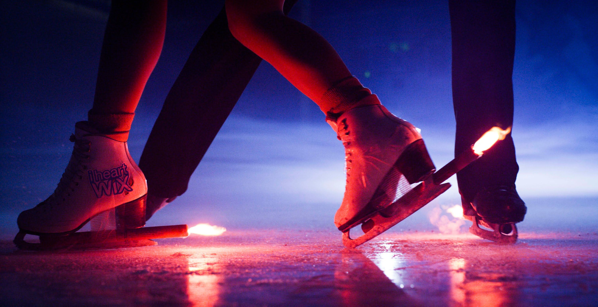
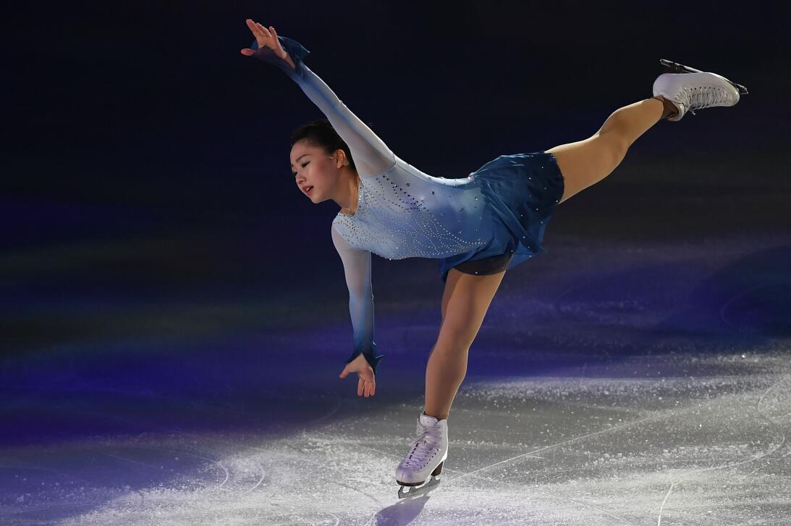
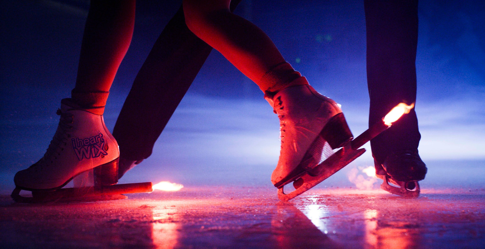
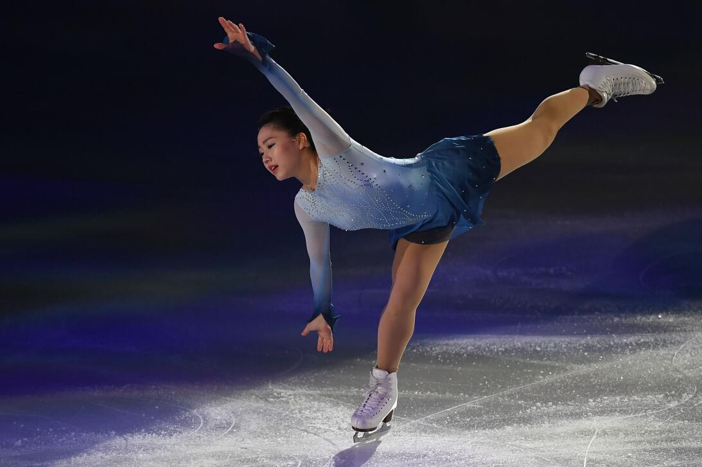

PATINAJE SOBRE HIELO:
Patinaje sobre hielo al aire libre en Austria.
Los patines para el patinaje artístico tienen una cuchilla en la parte inferior y el tacón es de madera.
El patinaje sobre hielo se lleva a cabo sobre una superficie de hielo, bien sea natural o artificial.
En el caso de superficie artificial, se utilizan recintos cerrados llamados pabellones o palacios de hielo
que pueden contar con graderías para acoger competiciones deportivas de las diversas especialidades de
patinaje sobre hielo. En los últimos años se están popularizando las llamadas pistas de «hielo sintético».
Una superficie en la que se puede patinar como en cualquier otra, pero que no es de hielo, sino de polietileno;
un tipo de plástico muy resistente. Desde la llegada del hielo sintético (también llamado hielo ecológico)
en la década de los 60, su evolución ha sido espectacular, llegando incluso a alcanzar una similitud del 95%
con el hielo convencional. Además, su uso está proliferando en muchas pistas domésticas, donde el consumo
eléctrico es un factor importante a tener en cuenta. En este sentido, la Asociación Nacional de Patinaje sobre
Hielo de Gran Bretaña., la federación británica de patinaje, aprobó, y recomienda, estas pistas para su uso.
Entre las ventajas de las pistas de hielo sintéticas está el hecho de que su montaje y mantenimiento son muy baratos,
ya que no requiere de consumo eléctrico, a lo que habría que sumar que hablamos de un material reciclable.
 


